Девять месяцев отбора, от Лиссабона до Тбилиси. Каждая серия — 10 игроков и 9 игр, первые два места едут в Кёльн. Эта страница — про дорогу: откуда собираются финалисты, какой путь они прошли и с какой силой приезжают.
Точка на карте — город клуба игрока на mafgame, размер — сколько финалистов оттуда, цвет — средний рейтинг. Нажмите на город, чтобы увидеть игроков. В режиме «через серию» линия идёт из дома в город, где игрок взял слот, и оттуда в Кёльн; золотые ромбы — все 28 серий отбора.
| # | Игрок | Клуб · город | Слот в финал | MMR | км до Кёльна |
|---|
По датам, с февраля по октябрь. Нажмите на серию — она подсветится на карте. Полный разбор отбора, очередь замен и судейство — на странице GMC Europa 2026.